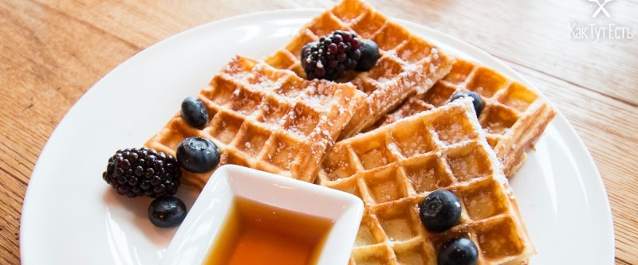

приготовление:
-
Соединить 2 яйца, 50 г сахара и щепотку соли, взбить венчиком. Добавить 70 г растопленного сливочного масла и 120 г молока, перемешать.
-
Просеять в смесь 160 г муки. Погасить ⅕ ч. л. соды лимонным соком, добавить в тесто и перемешать до однородности.
-
Выпекать в разогретой вафельнице по ≈ 3,5 минуты, ориентируясь на свою вафельницу.